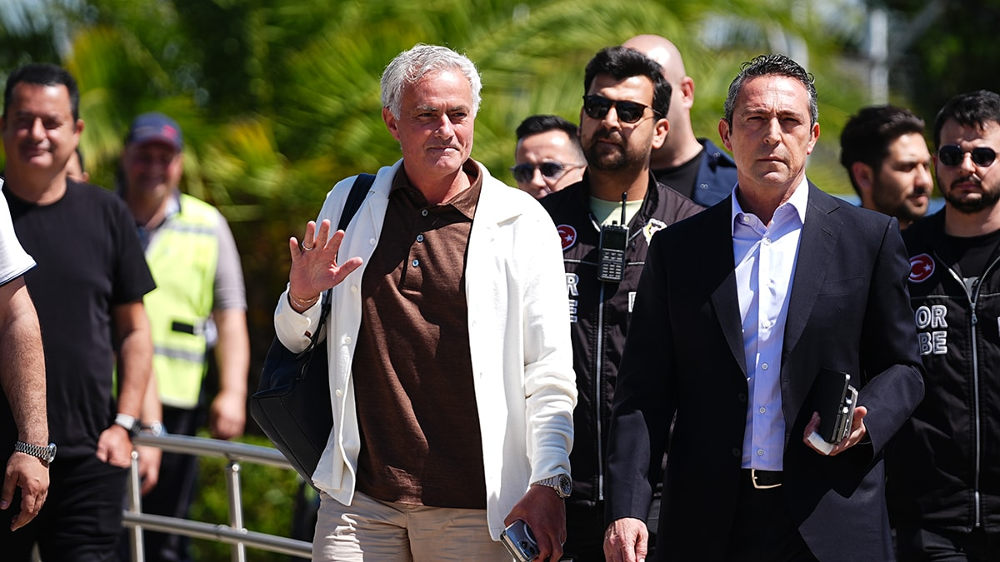

Special One
Buradan Wikipedia sayfasına ulaşabilirsiniz.
José Mourinho, futbol dünyasında sadece başarılarıyla değil, aynı zamanda kendine özgü karizması, taktiksel zekası ve güçlü kişiliğiyle tanınan bir isimdir. Portekizli teknik direktör, futbolda sadece teknik bilgisi ve stratejik becerileriyle değil, aynı zamanda oyuncularıyla kurduğu özel ilişkilerle de dikkat çekmiştir. Mourinho'nun sahadaki varlığı, takımına kazandırdığı disiplin ve motivasyonla bilinir. Mourinho, kendine has bir liderlik tarzına sahiptir. Oyuncularından maksimum verim almayı bilen ve onlara hem bireysel hem de takım olarak nasıl daha iyi olabileceklerini gösteren bir mentordur. Onun teknik direktörlük anlayışı, futbolcuların sadece fiziksel yeteneklerini değil, aynı zamanda zihinsel dayanıklılıklarını da geliştirmeyi hedefler. Bu bağlamda, oyuncularına sıkça psikolojik destek verdiği ve onların kendilerine olan güvenlerini artırdığı bilinir. Medya ile ilişkileri de Mourinho'nun karakterini yansıtır. Basın toplantılarında verdiği keskin ve zaman zaman tartışmalı demeçler, onun futbol dünyasında nasıl bir etki yarattığını gösterir. Mourinho, medyanın dikkatini takımının üzerinden alarak, baskıyı kendi üzerine çekme konusunda ustadır. Bu strateji, oyuncularının üzerindeki baskıyı azaltır ve onların sahada daha özgür oynamalarını sağlar. Mourinho'nun futbol felsefesi, genellikle defansif disipline dayansa da, bu yaklaşımı ile birçok kez eleştirilmiştir. Ancak, onun en büyük yeteneklerinden biri, mevcut oyuncu kadrosuna en uygun taktiksel düzeni oluşturabilmesidir. Bu pragmatik yaklaşım, Mourinho'yu diğer teknik direktörlerden ayıran en önemli özelliklerden biridir. Sonuç olarak, José Mourinho, futbol dünyasında sadece kazandığı kupalarla değil, aynı zamanda eşsiz liderlik tarzı, medyayla olan etkileşimi ve taktiksel esnekliğiyle de kalıcı bir iz bırakmıştır. Onun etkisi, yönettiği takımların performansının ötesinde, futbolun kendisine kattığı yenilikler ve getirdiği farklı bakış açıları ile de hissedilmektedir.
Başarıları ve kupaları
- Portekiz Primeira Liga 2002/03
- Portekiz Kupası- 2003
- Portekiz Süper Kupası- 2003
- UEFA Avrupa Ligi- 2003
- UEFA Şampiyonlar Ligi- 2004
- Portekiz Primeira Ligi- 2003/04
- İngiltere Premier Ligi- 2004/05
- FA Community Shield- 2005
- İngiltere Lig Kupası- 2005
- İngiltere Premier Ligi- 2005/06
- İngiltere Federasyon Kupası- 2007
- İngiltere Lig Kupası- 2007
- İngiltere Premier Ligi- 2015
- İtalya Supercoppa- 2008
- İtalya Serie A- 2008/09
- UEFA Şampiyonlar Ligi- 2009/10
- İtalya Kupası- 2010
- İtalya Serie A- 2009/10
- İspanya Kral Kupası- 2011
- İspanya Süper Kupası- 2012
- İspanya LaLiga- 2012
- İngiltere Lig Kupası- 2015
- UEFA Avrupa Ligi- 2017
- UEFA Konferans Ligi 2021-22